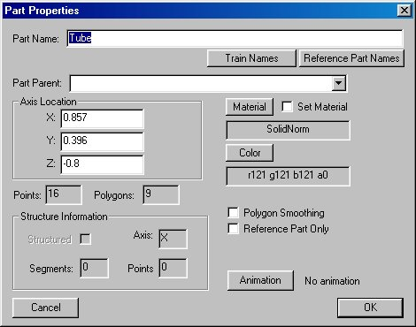
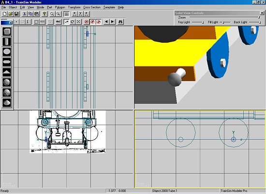
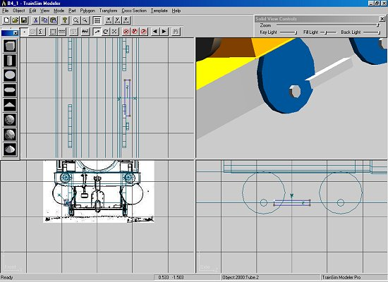
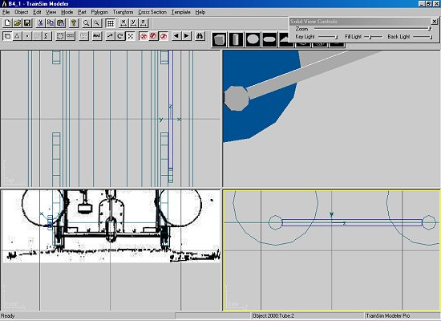
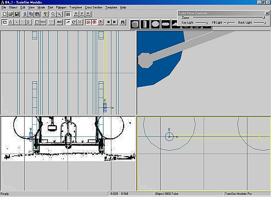

Constructing A Steam Loco Using Train Sim Modeler
Part 3
by Richard Osborne
Animating Rods And More Big Lumps
Let's move on to animation of the rods. First we need some rods, these will be made from 3 component parts & joined in a particular sequence. I'll explain as we go.

The driving wheel end, just a tube with the right side closed. Notice it's been set to the axle coordinates. Copy, paste & reset to the axle coordinates of wheels1. We have both ends of the rod to exact length.

For the joining part draw an open square tube - nurdle it about until it's a decent fit. I do about 90% of my drawing in 'point' mode - other people will do it differently. Use 'v' to get it square.


You'll have noticed that each of the 3 parts has its own axis. We want the rod to have the axis of wheels2 - the first part. We need to join them in such a way that the first part is selected last. Highlight the front part, the rod & finally the rear part. Double check - it's a fiddle splitting again. 'Part' then 'Join Selected', F2, take one of the Train Names - rod01, parent 'main'. I'm going to come back to the rods & show how to split, improve & rejoin it, using 'Snap to Grid'.

Why not take 'Wheels2' as parent? Think of your dinner going round in the microwave, it stays motionless on the plate and rotates relative to the oven. Then think of Buster Keaton sitting on the coupling rod in "The General" - he is motionless relative to the rod. We could have 'Wheels2' as parent - we'd have to introduce a rotation counter to the rotation of the wheel. Why complicate life?